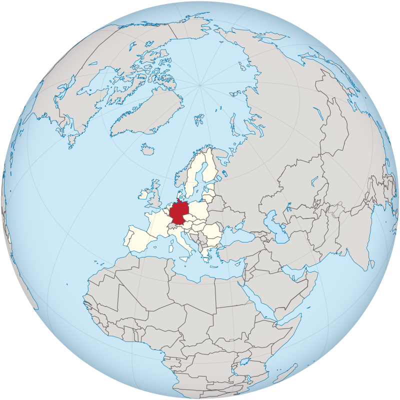

این سایت در مورد عروس هلندی میباشد

طوطی کوتوله برزیلی یا مرغ عشق واقعی
مرغ عشق در واقع ورژن کوچک شده طوطیهاست که با اندازه کوچک همراه منقار کج مشاهده می شود.سرزمین اصلی مرغ عشق امریکا می باشد البته امروزه در سایر سرزمینها نیز دیده می شود.
مرغ عشق اعجاب انگیز صورت هلویی در جهشهای رنگی گوناگونی پرورش داده شده همچنین مرغ عشق ماسک دار نیز در سرزمینهای سزیادی وجود دارد. حنجره مرغ عشق به گونه ای است که اجازه تقلید صداهای گوناگون را به پرنده می دهد حتی گاهی تقلید صدای انسان ولی در کل مرغ عشق سخنگوی خوبی نیست و خیلی از
طول عمر
طول عمر حدود ۱۵ سال و یا حتی بیشتر است و دشواری تعیین سن پرنده سبب شده اسن که نتوان طول عمر پرندگان وارداتی از خارج را تعیین کرد.
طوطی کوتوله( طوطی برزیلی) از خویشاوندان نزدیک مرغ عشق نقابدار محسوب می شود، چرا که هردو جزو گروهی هستند که با اصطلاح دارای حلقه سفید دور چشم می باشند. این گروه به علت وجود حلقه گوشتی سفیدی که پیرامون چشم خود دارند، تحت این نام خوانده می شوند. در این پرنده بر خلاف مرغ عشق صورت قرمز و مرغ عشق نقابدار ، جهشهای زیادی صورت نگرفته است.
